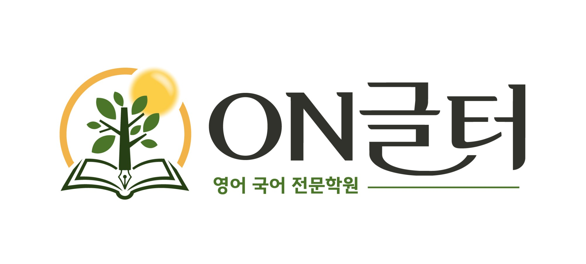

1'동일하다'의 뜻으로 알맞은 것을 고르세요.
2빈칸에 알맞은 낱말을 〈보기〉에서 골라 쓰세요.
| 보기 | 명도 · 추측 · 격식 · 조정 |
|---|
3'명도가 높다'와 뜻이 가장 가까운 말을 고르세요.
4'조정하다'와 바꾸어 쓸 수 있는 말을 고르세요.
5'가볍다'의 반대말을 쓰고, 그 말을 넣어 짧은 문장을 만들어 보세요.
6'추측'이라는 낱말을 넣어 내 생활과 관련된 문장을 한 개 만들어 보세요.
7와든과 플린의 실험에서 여러 개의 상자는 어떤 점이 서로 달랐나요?
8실험에 참여한 사람들은 검은색 상자가 흰색 상자보다 얼마나 더 무거울 것이라고 대답했나요?
9색의 밝기에 따라 어떤 느낌을 주는지 글에서 찾아 표에 정리해 보세요.
| 밝은색 (노란색, 하얀색) | |
|---|---|
| 어두운색 (검정색, 남색) |
10색의 무게감이 일상생활에서 활용되는 예를 글에서 두 가지 찾아 쓰세요.
11각 문단의 중심 내용을 간단히 정리해 보세요.
12이 글의 갈래로 알맞은 것을 고르고, 그렇게 생각한 까닭을 쓰세요.
13글쓴이는 왜 1문단에서 실험 이야기를 먼저 소개했을까요? 그렇게 생각한 까닭도 쓰세요.
14공항이나 기차역 천장에 밝은색을 쓰면 왜 편안한 느낌이 들까요? 글의 내용을 바탕으로 설명해 보세요.
15무게가 똑같은 가방이 하나는 검은색, 하나는 노란색이라면 사람들은 어느 쪽을 더 무겁다고 느낄까요? 까닭을 쓰세요.
16"중요한 발표를 하는 날에는 어두운색 옷을 입는 것이 좋다."는 의견에 찬성하나요, 반대하나요? 이유를 두 가지 쓰세요.
17내 방이나 교실에서 색의 무게감을 이용해 바꾸고 싶은 것을 한 가지 쓰고, 어떤 색으로 바꿀지 까닭과 함께 쓰세요.
18교실에서 바꾸고 싶은 곳과 색을 정해, 색의 무게감을 근거로 제안하는 글을 한 문단(150~200자)으로 쓰세요. 개요표부터 채우세요.
| 제안 | 교실의 을(를) 색으로 바꾸자. |
|---|---|
| 까닭 ① | |
| 까닭 ② | |
| 글 속 예시 | |
| 마무리 |